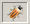
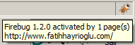
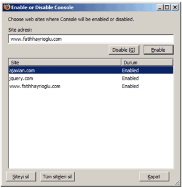
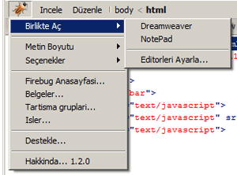
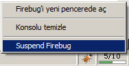
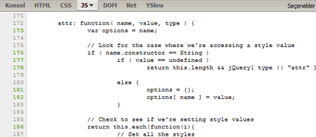
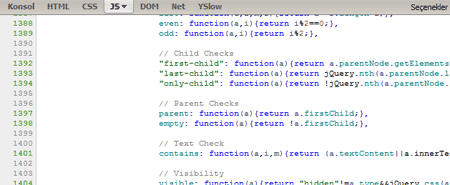

Daha önce FireBug'ın genel özelliklerinden bahsettik. Sıra
FreiBug ile CSS ve Xhtml yazmaya gelmişti ki yeni sürüm çıkınca bu
makaleyi yazma ihtiyacı duydum.
Daha önce FireBug'ın genel özelliklerinden bahsettik. Sıra
FreiBug ile CSS ve Xhtml yazmaya gelmişti ki yeni sürüm çıkınca bu
makaleyi yazma ihtiyacı duydum.
Web kod yazarları için büyük kolaylık sağlayan FireBug'ın yeni sürüm
çıktı ama kimseden ses çıkmadı. Belkide Google Chrome duyurusunun
altında ezildi. Ama Google Chrome'un benim için en büyük dezavantajı
FireBug gibi gelişmiş bir CSS ve XHTML aracının olmamasıdır. Aslında ben
bile geç kaldım, çünkü ben yazana kadar 1.2.1 sürüm çıktı.
FireBug'ın yeni sürümünde daha çok hata düzeltme, güvenlik düzeltmeleri
ve kararlı hale getirme işlemleri göze çarpıyor.
Göze çarpan özellikleri incelersek;
Firefox 3 Desteği
Benim Firefox 3'e geçmememin en büyük nedeni FireBug'ın kararlı bir şekilde Firefox 3'de çalışmaması idi. FireBug 1.2 sürümünde Firefox 3 desteğini sunarak bizi bu dertten kurtarmış oluyor. Artık Firefox3 kullanıyorum ve çok memnunum.
Araçlar daha kaliteli hale getirilmiş
Javascript panel, net paneli ve Konsol paneli yenilenmiş ve geliştirilmiş. Bu panellerdeki birçok sorun giderilmiş.
Panellerin Aktifleşmesini Seçebiliyoruz
John Resig'in söylediğine göre görünüşte o kadar önemli olmasada bu
sürümün en önemli özelliği olarak gösteriyor.
Bu özelliğin bize ne gibi avantajı var derseniz.
https://wiki.mozilla.org/User:Rcampbell/Firebug_performance bu
çalışmaya göz atmanızı öneririm. Her pencerede FireBug Javascript
panelinin açık olması performansı ciddi mana da etkiliyor. Bu nedenle
böyle özellik ekleyerek FireBug'ın bir handikapınıda gidermişler.
Artık Javascript panel, net paneli ve Konsol panellerinin aktif ve pasif olmasını ayarlayabiliyoruz. Normal durumda HTML, CSS ve DOM panelleri çalışıyor, Javascript, Net ve Konsol panelleri ise bizim seçimimize göre aktif ve pasif hale getirilebiliyor.

Yeşil ok işareti yerine FireBug kendi böcek ikonun koymuş. Böcek ikonu eğer Javascript panel veya net panel aktifleştirilirse normal rengini alıyor. Farenin imlecini üzerine getirince kaç sitede aktif olduğu bilgisini gösteriyor.

Önceki sürüm da olan bu sitede FireBug'ı kullanma özelliği biraz daha geliştirilmiş. Aktif site listesinin bulunduğu ayrı bir pencere ile bu kısım geliştirilmiş.

Birlikte Aç Ekranı

Belki birçok kişi için önemsiz gibi görünen bir özellik ancak benim için
çok önemli ve kullanışlı bir ekleme oldu. Çünkü buradan kopyalayıp
yapıştırmak sorun oluyor, koddan başka içerikleride alıyordu falan ve
her defasında kopyala yapıştır gına getiriyordu bazı projelerde.
Bu ekrandan açmak istediğimiz editörleri seçebiliyoruz ekleyip çıkarabiliyoruz.
Suspend/Resume Firebug

Yeni eklenen bu özellik sayesinde FireBug'ın tüm panellerini bir tık ile askıya alabiliyoruz ve daha sonra bu işlemi geri alabiliyoruz. Bu daha çok cep telefonundaki tek tuş gibi bir şey.
Rainbow FireBug ile javascript kodları daha anlaşılır
FireBug'daki javascript kodları renklendirme yapılmadığı için kod yığını şeklinde görünüyor bunu aşmak için güzel bir eklenti hazırlamışlar.

https://addons.mozilla.org/en-US/firefox/addon/7575
Bu eklenti her ne kadar test aşamasında olsa da güzel bir eklenti.

Son olarak Firefox'um Türkçe olduğu için sanırım FireBug'ımda Türkçe oldu. İlk başta bazı sorunlar olsada kullandıkça alışıyor insan. Bazı bölümler hala İngilizce kalmış.
Bu arada FireBug 1.3 çalışmalarına başlanmış bile.
Kaynaklar
- http://ejohn.org/blog/firebug-12-released/
- http://code.google.com/p/fbug/source/browse/branches/firebug1.2/docs/ReleaseNotes_1.2.txt
- https://addons.mozilla.org/en-US/firefox/addon/1843
- http://www.railsjedi.com/posts/24-Firebug-1-2-Excitement açılmıyorsa http://64.233.183.104/search?q=cache:nJW1FmPsOkUJ:www.railsjedi.com/posts/24-Firebug-1-2-Excitement+Firebug+1+2+Excitement&hl=en&ct=clnk&cd=1&client=firefox-a
- http://ajaxian.com/archives/firebug-12-beta-for-firefox-3-rc-1
- http://blog.mozilla.com/about_mozilla/2008/08/25/firebug-12-released/
- http://www.ajaxonomy.com/2008/javascript/firebug-12-released
- http://ajaxian.com/archives/firebug-12-the-final-release-is-out-there
- http://ostatic.com/171732-blog/firebug-group-releases-1-2
- http://justtalkaboutweb.com/2008/04/09/firebug-12-works-with-firefox-3-beta-5/
Yorumlar !